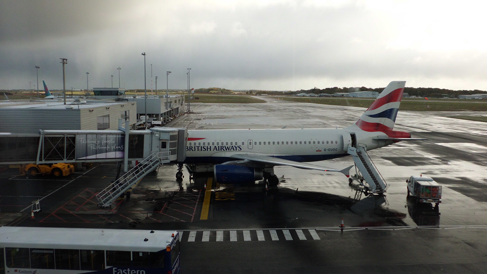
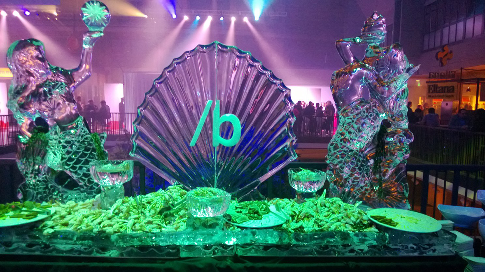

Microsoft Build 2012
This article was originally published 24th May 2022 on Linkedin
Microsoft Build 2022 starts this week, but it also is a good time to think about Microsoft Build 2012 which I attended in Seattle a decade ago, that visit not only helped me as a developer but also had a large impact on my life as a whole...
It was October 27th 2012 when I headed to Newcastle Airport to fly down to London for my flight onwards to Seattle! I wasn't too sure what I thought of flying again but seemed to be okay as soon as the flight to London took off, I actually caught glimpse of some people I knew on my flight so that seemed to be a good sign already although on the taxi to the runway someone thought that was the perfect time to grab their jumper from the overhead locker, but luckily didn't cause any delays and we took off on time, the flight circled above Heathrow for quite some time which took up most of the flight time in the end but I had enough time to make my connection by the time the plane landed at Heathrow!
The next part of my journey would be on a 747, which would be my first ever long-haul flight, bound for my destination, Seattle, which was about a nine-hour flight. I arrived at the gate for the plane in plenty of time, although another small drama was someone pushing past me, which they quickly regretted as they were pulled out of the line soon afterwards as that action had gained them some extra attention from airport security. I boarded my flight and made my way through the aircraft to my seat, which seemed like a long journey itself, to my seat which was one row from the front of economy with a window seat which I'd chosen carefully and settled in ready for take-off. However, there was another drama as while waiting at the gate to depart the plane decided we were not on the ground still but at cruising altitude and the plane thought it had depressurised, so all the oxygen masks were deployed, no-one seemed overly concerned and they were soon pushed back in with the aid of a broom handle, satisfied my flight departed Heathrow Airport.
At around nine hours later the flight was going to be landing at Seattle, they were handing out forms to fill in which had some interesting questions which I answered honestly, at least I would have had I thought to bring a pen and was too quiet at the time to ask for one so thought I'd fill it out at the airport. After passing through various parts of the airport there was one last part to deal with, and there was a very long queue forming but I found a place with pens and was quickly able to fill out the forms. However, in the time it took me to do this, the queue was fully formed except for me so I joined the back of the queue. I eventually got to the front, having been at the back the entire time, it seemed my flight was the last of the day. Yet again there was another small hiccup as when getting my information after I'd provided my fingerprints and iris scan the person's computer crashed, luckily this was quickly resolved although made more amusing when I told them my reason for being there for a Microsoft conference and them saying if it were at all possible to get that fixed! I finally left the airport and got into a taxi and made my way to my hotel in Bellevue, which seemed to be just outside of another Newcastle!

On October 29th after a good night's sleep or during the day as the time difference seemed to be a bit of a struggle at first, I decided I'd check out the one thing I knew was in Seattle, which was the Space Needle, so I got a taxi from the hotel and headed there first! Once there took some photos of it from the bottom, one of which is featured above and then took some more at the top. I also thought that would be a good time to call home and let everyone know I'd got there okay, and the mobile reception was excellent, I don't think I've ever had a clearer phone call before or since which made for a nice phone call! I also attempted to take a few photos of myself but was struggling a bit until someone was kind enough to take my photograph. I usually wouldn't let anyone else use my camera but felt comfortable and they took what was a really nice photo of myself, little did I know then, but that photo would help change my life years later, but at the time just was enjoying the views and taking lots more photos! From the top of the Space Needle, I saw quite a few places so once down from the top I decided to visit everything I could see, there was the Museum of Pop Culture that had a great sci-fi prop exhibit including a Dalek from Doctor Who, which is a sci-fi show back in the UK so was a nice bit of home to see there! I also visited everything else around the Space Needle including somewhere that had Ancient Egypt exhibit that had been in the UK, but I'd missed but here it was so of course I visited that too! I also hopped on the Monorail to check out the city itself before returning to the Space Needle one last time and then headed back to my hotel to then get the shuttle bus to get myself registered for the conference.
October 30th was the first day of the conference which was to be held in the Microsoft Campus, somewhere I'd always wanted to go and couldn't believe I was there. I also wanted to make sure I got the most out of the opening keynote from the then CEO Steve Ballmer and others so join the queue early and got as near to the front the non-press attendees could manage! It was great to see all these Microsoft people speak in person, one highlight was Satya Nadella who really impressed me and later wondered if he might be the one to replace Steve Ballmer and as it turned out, my instincts were correct, and he did indeed become CEO of Microsoft! The opening was amazing, and Windows 8 had just been released so there was plenty to talk about, it was fun to think of people I knew back home watching the live stream and I was there watching it live in person! Later there was a conference party but I was a bit too tired to enjoy it but was nice to see some more familiar faces from Microsoft, so just returned to my hotel but did at least there see the famous Newcastle Brown Ale which I'd never tried before despite it originally coming from Newcastle back in the UK so that was a fun way to try it there for the first time!
October 31st or Halloween was the second day of the conference with another keynote enjoy, I spoke to some people in the queue and relayed my experience of the oxygen mask incident, many of them had flown long haul dozens of times and had never heard of this happening before, so it seems my experience was more unique than I realised! The second day we also received a giveaway of a free Surface RT and Windows Phone which was great to get those! The sessions themselves also started and those were amazing, got to ask some questions during and after talks and was so much more than were able to get from just watching online. That evening was a Halloween themed party which was great, seemed to be the perfect time to be there as it is a bigger deal there than it is back in the UK!
1st November was the third day of the conference with more sessions to enjoy, and people to talk to and things to learn as well as the closing party to look forward to which was actually being held near the Space Needle so got to see it again, except at night this time! It was great to chat to many more people and was an amazing way to celebrate the conference. The following day was the last day of the conference with just a few more things to do and took the chance to visit Bellevue itself and check out the Microsoft Store as there weren't any in the UK at the time, I was able to pick up some accessories for my Surface RT I'd got at the conference, it was great to chat to the people in the store and even got my first look at a Tesla as another store turned out to be a mini-showroom for them and I'd not seen any before in the UK!
Although the conference was over, I still had one full day before heading home as had chosen to fly back on Sunday 4th November instead of the Saturday, so what to do? I'd heard that Boeing was based in Seattle so decided to take a taxi there, which was quite an expensive ride but since I wanted to make the most of my trip, seemed worth the cost! My driver was actually planning on picking up their wife from the airport but got one of their other drivers do to it instead, I really hope their wife didn't mind, I guess the $100 cost to get there probably helped! I actually got there far quicker than I thought and was able to get onto an earlier tour, you weren't allowed to take photos inside the factory, but it was amazing, there weren't many workers around as it was a Saturday but was amazing to see the very kind of aircraft being built I'd be flying home on the following day! My tour was great, one of the attendees actually worked for Airbus, Boeing's rival so made that tour and my earlier arrival even more worth it! After the tour I spoke to some of the staff who seemed surprised I'd got there myself without a bus tour and that taxis didn't come there, but my driver had left me his number and did indeed turn up okay! On the way back to my hotel the driver mentioned there was the Museum of Flight in Seattle, so I told him to take me there! When I arrived there seemed to be a special event on as after I bought my tickets and noticed a man signing autographs, I didn't know who he was at the time but he was speaking to someone and I recognised a familiar accent so decided to sit and have a chat with them, I asked them if they were from the North East and turned out it was Nicholas Patrick who was originally from Saltburn and they were a NASA astronaut! I'd come all this way and not only had met an astronaut which I'd always wanted to do, but they were from the UK too, couldn't believe my luck! I also found out there was an exhibit open for VIP members as an exclusive preview, so what did I do? Bought VIP tickets for myself and checked it out, turned out they were meant to get a Space Shuttle but that went elsewhere, what they did get was the Space Shuttle trainer, which although was wooden, it was the only version of the Space Shuttle every single astronaut had been on, so that was really interesting! Also, while there I saw Concord for the very first time, hadn't realised how small it was, along with the very first 747 and a version of Air Force One, along with many other cool and interesting aircraft, my taxi driver returned for me just as I was planning to leave so was perfect timing and headed for my hotel!
Sunday 4th November was my journey home, I decided due to not quite knowing how long security and procedures would take to get to the airport a few hours early, however within 30 minutes of getting to check-in I was in the terminal proper, so had a few hours to wait there! But was good to watch the flights arrive and depart as well as buy a few more things to take home! I really made the most of being there and got those free refills of drinks I'd always heard were common in the United States! I still couldn't believe I was there and would be heading home, journey back was at night so there wasn't much to do on the way back and flight back to Newcastle was pretty normal but had some amazing memories of being there! However, what about that photo of me on top of the Space Needle? Well years later that trip had built up my confidence due to that I signed up for a dating website, but I needed a profile picture, so chose the one that had been taken of me on top of the Space Needle! I was out for a colleague's leaving party and got a message from someone, they'd asked me if that was a picture of me at the top of the CN tower in Toronto in Canada, I told them it was in fact the Space Needle in Seattle, but that got us talking more, we exchanged messages then our email address then our numbers, finally meeting a few weeks later and a few years after that got engaged and a few years later got married! When they say going to a conference can change your life, for me that was more true than I ever could have imagined, going there made me a better developer, more confident and in the years later changed my life in ways I could never have anticipated, so making that choice to go was the best decision I've ever made and that's why it means so much to me to have gone to Microsoft Build 2012!